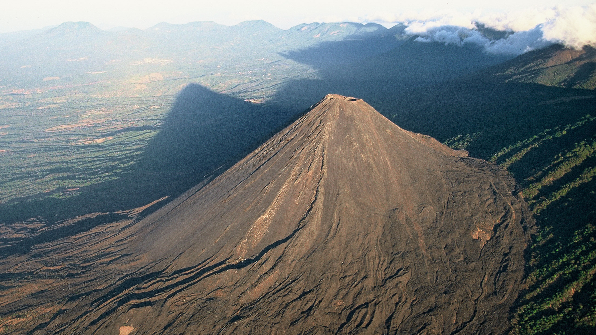
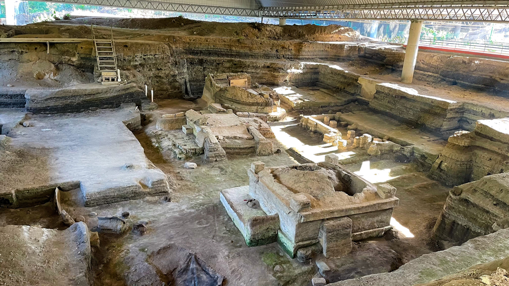

Lugares a los que me gustaría viajar o visitar
Los lugares que me gustaría visitar serían los siguientes:
- Volcán Izalco

Es un volcán muy bonito.
- Joya de Cerén

Una ruina muy bonita.
- Ruta de Las Flores
Un lugar con flora muy atractiva.
Algunos links con referencia al turismo salvadoreño: